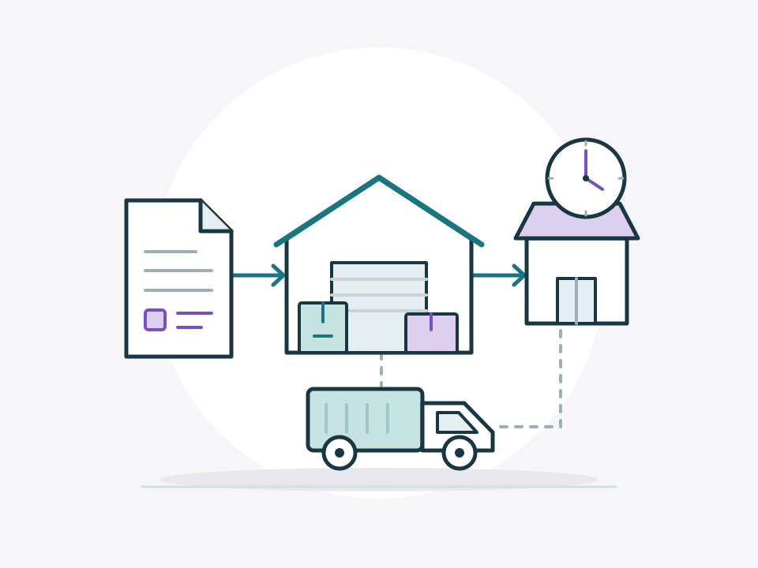
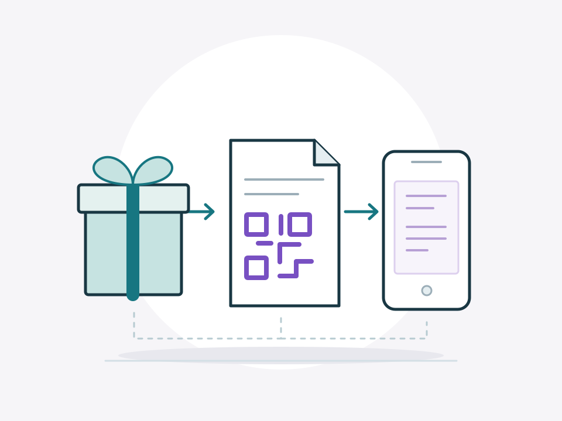

Business domain / 1 scenario
Supply chain
Explore the decisions behind fulfilling an order: shipment timing, cost, operating readiness and the requirements that need to line up before a team commits.

Use Cases / Business decisions in practice
Explore a business domain, choose a scenario and follow the decisions as the situation changes. Each scenario brings its articles, worked examples and supporting references together.
Business domains

Business domain / 1 scenario
Explore the decisions behind fulfilling an order: shipment timing, cost, operating readiness and the requirements that need to line up before a team commits.

Business domain / 1 scenario
Follow the decisions behind a gift-kit campaign: checking the recipient experience, comparing complete corrections and preparing a handoff the team can support.
Business domain / 1 scenario
Explore the operating decisions behind a promotion push: staffing, timing, offers, additional spending and the evidence needed to learn what pays.